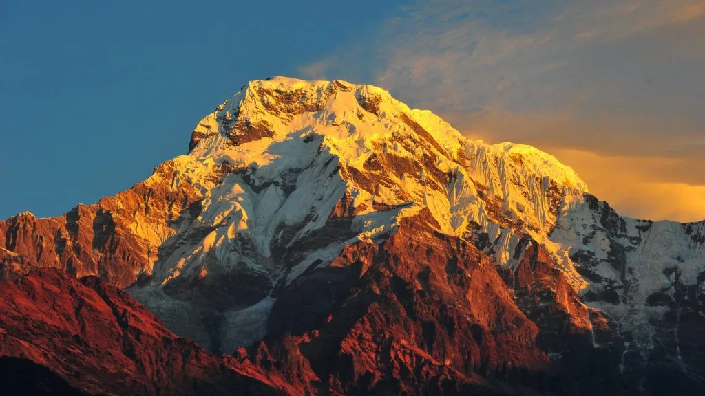
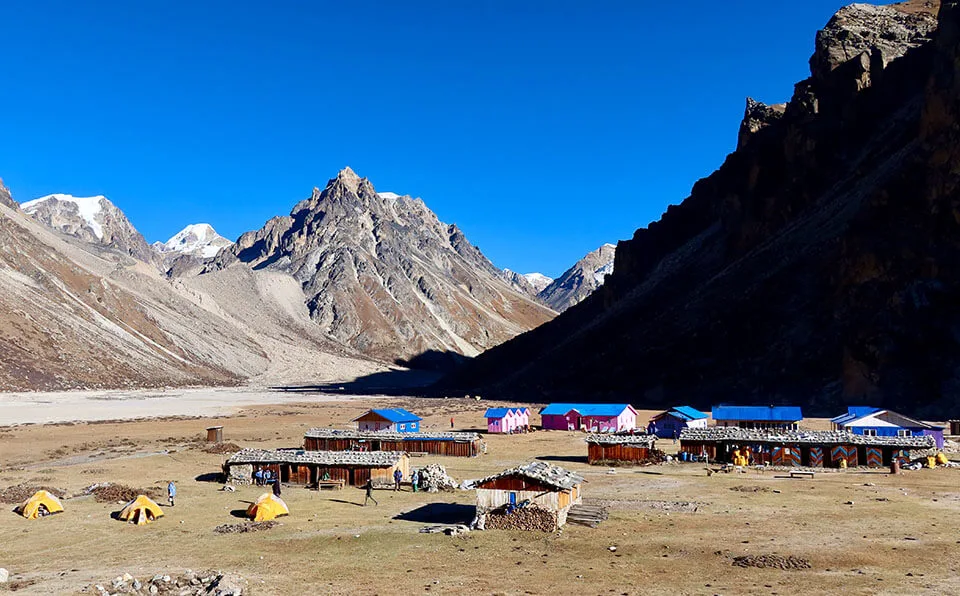
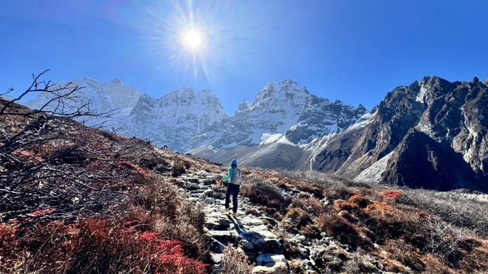
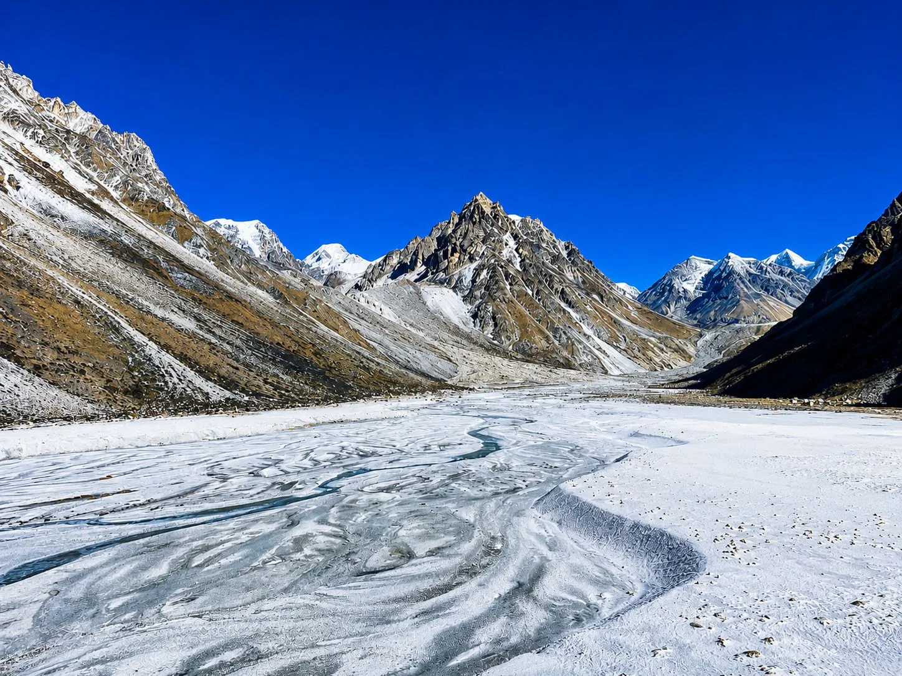
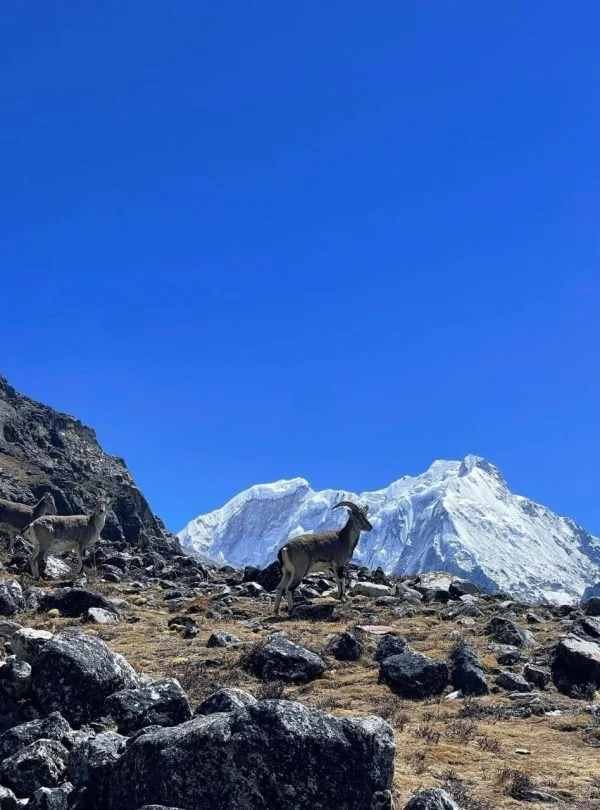

Choosing the overland route to Kanchenjunga with Igloo Himalaya Treks was extraordinary. Not having to stress about flight cancellations to Bhadrapur or Suketar let us enjoy the trip completely. The drive through the eastern hills was fascinating, and once on the trail, the isolation was breathtaking. Reaching Pangpema (5,143 m) with the immense north face towering above us was deeply moving. Crossings over the Sele Le passes and the South Base Camp at Oktang made this a complete masterclass in Himalayan expedition trekking.
Kanchenjunga Region • Pristine Wilderness of the Five Treasures
5.0
reviews on TripAdvisor
5.0
169 reviews on Google
Kanchenjunga Circuit Trek Without Flight — 20 Days
Visit Kanchenjunga’s north and south base camp areas on a twenty-day journey through eastern Nepal. Travel by road to Taplejung, then continue by jeep to Sekathum before walking through Ghunsa and Lhonak to Pangpema.

Travelers' Choice
Best of the Best 2026




Key Trip Facts
DURATION
20 Days
20 days, including 14 trekking and acclimatisation days and 4 road days
DIFFICULTY
Challenging
Challenging; sustained altitude, long stages and a high-pass crossing
MAXIMUM ALTITUDE
5,143 m / 16,873 ft
Pangpema, approximately 5,143 m
DESTINATION
Nepal
Eastern Himalayas of Nepal
ACTIVITY
Trekking
High alpine wilderness circuit
ACCOMMODATION
Hotel & Basic Lodges
2 Kathmandu hotel nights; 17 nights in basic lodges or local guesthouses
TRANSPORT
Public Bus & Local Jeeps
Public bus to Taplejung; local jeeps; overland return to Kathmandu; airport transfers
MEALS
Kathmandu & Trek Meals
Kathmandu breakfasts and farewell dinner; trekking meals with seasonal fruit after dinner
RECOMMENDED SEASON
Spring & Autumn
Spring (March–May) and autumn (September–November)
TREK STARTS
Sekathum
Sekathum (approx. 1,650 m, reached via Taplejung)
TREK ENDS
Rani Pul
Rani Pul (approx. 1,430 m, jeep return to Taplejung)
TREK REGION
Kanchenjunga / Eastern Nepal
Kanchenjunga Conservation Area
PACKAGE START POINT
Kathmandu
Kathmandu (Tribhuvan International Airport arrival)
PACKAGE END POINT
Kathmandu
Kathmandu (airport departure transfer included)
Overland Kanchenjunga Circuit Trek Overview
Our twenty-day Kanchenjunga Circuit Trek Without Flight connects the mountain’s northern and southern approaches through Ghunsa, Lhonak, Sele Le and Ramche. You visit Pangpema at approximately 5,143 m and the Oktang viewpoint above the Yalung Glacier. Road travel through Taplejung replaces domestic flights, with four travel days linking Kathmandu to both ends of the trek.
The outward journey begins with a long bus ride to Taplejung, followed by a jeep journey to Sekathum. Walking stages pass through Amjilosa and Gyabla before reaching Ghunsa. Forests, river crossings and steep hillside paths shape the approach. Around Ghunsa, wooden houses, prayer flags and monasteries reflect local Buddhist traditions. An additional night here allows an acclimatisation hike before the route continues towards Kambachen and Lhonak higher up.
From Lhonak, you make a return hike to Pangpema for views towards Kanchenjunga’s northern face. After descending to Ghunsa, the route climbs again to Sele Le and crosses high passes towards Cheram. Ramche provides the overnight base for the southern excursion to Oktang. You then descend through Torongding to Rani Pul before returning by road.
This is a demanding circuit with repeated nights above 4,000 m, uneven trails and long days between basic lodges. The Ghunsa acclimatisation day provides adjustment time, but several later stages gain substantial sleeping altitude. Your guide assesses progress and may change plans when health, snow or trail conditions require it. Previous trekking experience and preparation for consecutive days are recommended.
Accommodation combines basic mountain lodges, local guesthouses and two Kathmandu hotel nights. The twenty-day programme includes arrival, the complete walking route, overland journeys and departure from Nepal afterwards.
Key Route Highlights & Destinations
Taplejung
Sekathum
Ghunsa
Lhonak
Pangpema (5,143 m)
Sele Le (~4,290 m)
Sinion La (~4,645 m)
Ramche
Oktang (4,730 m)
Both Base Camp Areas
100% Overland Access
Ghunsa Acclimatisation Rest
Want to know more about this trek?
Chat with us — real trekking experts, not bots.
Replies within 2–4 hours
Overland Kanchenjunga Circuit Trek Highlights
Why Book the Overland Kanchenjunga Circuit Trek with Igloo Himalaya Treks?
We help you prepare in Kathmandu and support your walking journey through Kanchenjunga. This package includes the following trekking arrangements.
Trek Briefing and Gear Check
Before leaving Kathmandu, we explain the programme, check your essential equipment and help with last-minute preparations. You can ask questions about the walking days, accommodation and what to carry.
Guide and Porter Support
Your package includes an experienced, government-licensed trekking guide and one porter per two trekkers. The guide leads your route, while porters carry main luggage within the agreed weight allowance between lodges.
Equipment Provided for the Trek
We supply a sleeping bag, down jacket and duffel bag for the trek. These loan items must be returned afterwards. We check fit and condition before you leave Kathmandu by road.
Communication When Plans Change
Our team discusses changes when roads, weather or walking conditions affect the programme. We explain alternatives and any extra costs beyond the agreed services, including additional nights or transport when delays occur.
Our twenty-day itinerary visits both Kanchenjunga base camp areas, with acclimatisation in Ghunsa and road journeys through Taplejung. Walking times are approximate; weather, road conditions and your progress can affect the daily programme considerably.
Day 1: Arrival in Kathmandu
Arrival & Airport Transfer — Kathmandu, around 1,400 m — 3-Star Hotel Check-in
Welcome to Nepal. Our representative meets you at Tribhuvan International Airport and takes you to your hotel. After settling in, we discuss the walking programme, check your equipment and answer questions about the route and lodge arrangements.
Depending on your arrival time, you can rest after the flight or explore nearby streets. Prepare your trekking bag and keep essentials accessible for tomorrow’s road journey towards Taplejung in eastern Nepal.
Day 2: Drive from Kathmandu to Taplejung
Scenic Overland Journey — Taplejung, around 1,820 m — 17–18 Hours Public Bus
We leave Kathmandu for the long road journey to Taplejung. The route crosses valleys and climbs into eastern Nepal’s hills, with towns and changing countryside along the way.
Keep water, medicines and an extra layer within reach during this long journey. Traffic, roadworks and landslides can extend the schedule, so arrival may be late. On reaching Taplejung, check into the guesthouse and rest before tomorrow’s jeep journey.
Day 3: Travel from Taplejung to Sekathum by Jeep
Mountain Jeep Access — Sekathum, around 1,650 m — 4–5 Hours Valley Drive
We continue by jeep towards Sekathum. The road narrows as it follows the valley, passing villages, cultivated slopes and river crossings on the approach to the walking route.
Expect rough surfaces and occasionally slow progress on mountain roads. Weather can affect where vehicles stop, so your guide confirms the practical trailhead. In Sekathum, settle into the lodge, check your daypack and prepare for tomorrow’s first walking stage.
Day 4: Trek from Sekathum to Amjilosa
Valley Walking Stage — Amjilosa, around 2,510 m — 6–7 Hours Forest Climbs
Our walking day follows the Ghunsa Khola valley from Sekathum. Forested slopes and river crossings lead into steeper sections as the trail climbs away from the lower valley towards Amjilosa.
The uphill sections require a steady pace, particularly after two days of road travel. Keep water and rain protection accessible, and watch your footing on wet stones. Small villages and cultivated ground appear between the forested stretches. We reach Amjilosa and settle into a basic lodge for the first night of our mountain walking journey.
Day 5: Trek from Amjilosa to Gyabla
Wooded Hillside Trail — Gyabla, around 2,730 m — 4–5 Hours Bamboo Paths
We leave Amjilosa and continue through wooded hillsides towards Gyabla. Bamboo and other forest growth line parts of the route, while breaks in the trees reveal the valley and surrounding slopes.
The trail includes climbs and descents even though today’s walk is shorter. Take care where roots, stones or damp ground make footing uneven. Arriving in Gyabla, check into the lodge and explore nearby paths if time allows. The afternoon also leaves time to rest before continuing higher towards Ghunsa tomorrow.
Day 6: Trek from Gyabla to Ghunsa
Ascent to Tibetan Village — Ghunsa, around 3,595 m — 4–6 Hours via Phale
Today’s walking route continues up the valley through forest and riverside paths. We pass Phale before reaching Ghunsa, where wooden houses, prayer flags and local monasteries introduce another part of the valley’s Buddhist village life.
Ghunsa is our base for two nights before the northern approach. The rise from Gyabla is substantial, so report headache, nausea or unusual fatigue to your guide. After checking into the lodge, keep the afternoon gentle and prepare for tomorrow’s acclimatisation outing above Ghunsa.
Day 7: Acclimatisation Day in Ghunsa
Acclimatisation Excursion — Ghunsa, around 3,595 m — Ridge Viewpoint Walk & Village Rest
We stay in Ghunsa and take a shorter walk above the village if conditions and health allow. A nearby ridge offers a chance to gain some height before returning to the same lodge afterwards.
Your guide chooses the route and turnaround point according to the group’s progress. Afterwards, return for rest and preparations. This additional night supports adjustment, but it does not remove altitude risk. Tomorrow’s stage continues towards Kambachen, with exposed and increasingly rocky ground.
Day 8: Trek from Ghunsa to Kambachen
Subalpine Valley Trail — Kambachen, around 4,100 m — 4–6 Hours Rocky Ascent
Leaving Ghunsa, we follow the upper valley towards Kambachen. The route passes through woodland before opening onto rockier slopes, with glacial rivers and mountain views appearing as we climb. Jannu appears where weather and the surrounding ridges allow.
Some sections cross unstable ground, so follow the guide’s directions and keep moving through exposed areas. The higher altitude makes the walking slower even where gradients ease. Reach Kambachen, settle into the lodge and rest before tomorrow’s ascent to Lhonak.
Day 9: Trek from Kambachen to Lhonak
Glacial Valley Moraine — Lhonak, around 4,785 m — 4–6 Hours High Alpine Stage
We continue towards Lhonak through a broadening glacial valley. Trees fall behind, leaving open slopes, stones and mountain views. The trail is exposed to wind, and crossing uneven ground requires attention as altitude makes sustained effort feel harder.
Today’s sleeping altitude is higher than Kambachen, without an extra acclimatisation day there. Tell your guide how you feel throughout the stage. At Lhonak, settle into the basic lodge, keep warm and review tomorrow’s Pangpema hike according to your health.
Day 10: Hike to Pangpema North Base Camp and Return to Lhonak
North Base Camp Excursion — Lhonak, around 4,785 m — 7–8 Hours Hike to Pangpema (5,143 m)
We leave Lhonak early for the return hike to Pangpema. The route follows the glacial valley over rough ground, with the altitude and exposure making steady pacing especially important.
Pangpema is the northern base camp area beneath Kanchenjunga. In clear weather, the mountain’s north face and peaks rise above the glacier. Spend time at the viewpoint while your guide checks conditions and the group’s progress.
After the visit, follow the same trail back to Lhonak. The planned overnight remains in the lodge, rather than camping at Pangpema, before tomorrow’s descent towards Ghunsa.
Day 11: Trek from Lhonak to Ghunsa
Valley Retrace Descent — Ghunsa, around 3,595 m — 7–8 Hours Walk past Kambachen
We retrace the northern approach from Lhonak, passing Kambachen before returning to Ghunsa. The route loses altitude, with trees gradually reappearing after the open ground of the upper valley.
Although we finish lower, the length and rough sections make this a full walking day. Take care on descents and exposed stretches, allowing time for breaks as needed. Back in Ghunsa, settle into the lodge and organise your equipment for the different route towards Sele Le tomorrow, across higher ground.
Day 12: Trek from Ghunsa to Sele Le
High Route Climb — Sele Le High Camp, around 4,390 m — 5–6 Hours Forest & Alpine Ridge
We leave the Ghunsa valley and climb towards Sele Le. Forest paths lead onto higher slopes, with steeper sections and rough ground before reaching the high camp area. This route connects the northern approach with Kanchenjunga’s southern valleys.
Today brings another substantial rise in sleeping altitude after last night in Ghunsa. Walk steadily and report symptoms early. Facilities at high camp are limited, so prepare warm layers, gloves and your headlamp before resting for tomorrow’s crossing towards Cheram.
Day 13: Cross the High Passes from Sele Le to Cheram
Cross High Mountain Passes — Cheram, around 3,870 m — 8–9 Hours Traverse across Sinion La (~4,645 m)
We make an early start for the high route from Sele Le to Cheram. Several climbs and descents link the passes, with exposed ground and possible snow affecting progress.
This is one of the circuit’s longest, most demanding days. In clear weather, the ridges provide broad Himalayan views, but wind and cloud can change quickly. Follow the guide’s chosen line and keep warm clothing accessible.
After crossing the high ground, descend into the Yalung Valley towards Cheram. We stay in a lodge at a lower elevation and rest after the walking stage.
Day 14: Trek from Cheram to Ramche
Upper Yalung Valley — Ramche, around 4,580 m — 4–5 Hours Glacial Approach
From Cheram, we climb the upper Yalung Valley towards Ramche. Forest thins as the route rises, giving way to more open ground, moraine and mountain views beside the glacier’s southern approach.
The walking stage is shorter than yesterday’s crossing, but the sleeping altitude rises again. Take a measured pace and tell your guide about any discomfort. At Ramche, settle into the lodge and prepare for tomorrow’s excursion towards Oktang. The exact walk depends on weather, trail conditions and how you feel.
Day 15: Visit Kanchenjunga South Base Camp Viewpoint and Return to Ramche
South Base Camp Viewpoint — Ramche, around 4,580 m — 3–4 Hours Return Excursion to Oktang (4,730 m)
Today’s excursion follows the upper valley from Ramche towards Oktang, described as the south base camp viewpoint. Rocky paths and glacial ground lead to views above the Yalung Glacier.
In clear weather, the viewpoint reveals Kanchenjunga’s southern side and neighbouring peaks above the glacier. Kabru and Rathong form part of the mountain setting. Your guide chooses the turnaround according to visibility, trail conditions and health.
After time at the viewpoint, return to the same lodge in Ramche. Keep warm clothing and water accessible throughout the excursion, allowing flexibility if weather changes quickly.
Day 16: Trek from Ramche to Torongding
Descent through Yalung Valley — Torongding, around 2,995 m — 6–7 Hours Forest Return
We descend from Ramche through Cheram and continue down the Yalung Valley towards Torongding, also written Tortong. The route returns to forest after the open terrain around the glacier and lodges.
The descent can be tiring on your knees, with stones, roots and damp sections requiring care. Keep a steady pace and take breaks rather than rushing downhill. As the valley becomes more wooded, conditions warm. Reach Torongding and settle into a basic lodge for the night before tomorrow’s final stage.
Day 17: Trek from Torongding to Rani Pul
Lower Valley Trek Completion — Rani Pul, around 1,430 m — 7–8 Hours Riverside Descent
Our final trekking day continues from Torongding towards Rani Pul. The route passes through wooded slopes and lower valleys, with warmer conditions replacing the cold of the higher stages.
Climbs and uneven sections remain part of the walk even though we finish lower. Wet paths can be slippery, particularly after rain, so keep your footing careful. On reaching Rani Pul, check into the lodge and prepare your bags for tomorrow’s jeep journey back towards Taplejung after completing the circuit.
Day 18: Drive from Rani Pul to Taplejung
Mountain Jeep Return — Taplejung, around 1,820 m — 4 Hours Overland Drive
We leave the walking route at Rani Pul and return towards Taplejung by jeep. The journey passes valleys, hillsides and villages as it reconnects with the main road.
Road surfaces, weather and vehicle availability can affect the timing. Keep essentials with you and follow the guide’s advice about stops. In Taplejung, settle into the guesthouse and organise your luggage for tomorrow’s long return to Kathmandu by road.
Day 19: Drive from Taplejung to Kathmandu
Overland Road Return — Kathmandu, around 1,400 m — 17–18 Hours Drive & Farewell Dinner
Today we return from Taplejung to Kathmandu by road. The long journey follows eastern Nepal’s hills and valleys, with progress dependent on traffic, road conditions and the stops.
Keep water, medicines and an extra layer within reach. Arrival may be late, so leave onward arrangements flexible. Transfer to the hotel on reaching Kathmandu. The included farewell dinner is arranged around the journey and your international departure schedule.
Day 20: Departure from Kathmandu
International Farewell — Kathmandu, around 1,400 m — Airport Transfer & Departure
Your twenty-day Kanchenjunga journey ends today. After breakfast, prepare for your onward travel. Depending on your departure time, there may be an opportunity for a final walk near the hotel before leaving for the airport.
Our representative accompanies you to Tribhuvan International Airport for your departure.
What’s Included in the Overland Kanchenjunga Circuit Trek
Airport Transfers
Pickup and drop-off for your arrival and departure in Kathmandu.
Road Journeys
Public bus to Taplejung; jeeps to Sekathum and from Rani Pul; Kathmandu return transport as quoted beforehand.
Accommodation
Two nights in a three-star Kathmandu hotel with breakfast, plus basic twin-sharing trekking lodges. Your quotation confirms Taplejung guesthouse nights and room arrangements before departure.
Meals
Trekking breakfast, lunch and dinner, seasonal fruit after trekking dinners, tea or coffee as quoted, Kathmandu breakfasts and a farewell dinner. Road-day meals are confirmed with you before departure.
Guide and Porter
An experienced, government-licensed trekking guide and one porter shared between two trekkers.
Permits and Entry Fees
Kanchenjunga Restricted Area Permit and Kanchenjunga Conservation Area Permit, arranged for your trekking programme.
Trekking Equipment
A sleeping bag, down jacket and duffel bag are loaned for this trek. All three must be returned afterwards.
First-Aid Supplies
A medical kit carried by your guide during the programme.
Staff Arrangements
Insurance, accommodation, meals and necessary equipment for the team.
Trip Administration
A trekking map, government taxes and official service charges for the programme.
What’s Not Included in the Overland Kanchenjunga Circuit Trek
International Flights and Nepal Visa
Airfare to and from Nepal and your visa fee.
Travel Insurance
The cost of your policy, which must cover high-altitude trekking and emergency helicopter evacuation.
Emergency Evacuation
Helicopter rescue, medical treatment and associated emergency expenses are excluded from the package price.
Personal Equipment
Boots, clothing, poles and other personal items beyond the sleeping bag, down jacket and duffel bag provided.
Extra Food and Drinks
Snacks, bottled water, alcoholic drinks and beverages beyond included meals, seasonal fruit and tea or coffee.
Other Kathmandu Meals
Lunches and dinners apart from the farewell dinner in your package.
Lodge Services
Hot showers, charging and other personal services.
Guide and Porter Tips
Gratuities for your trekking team.
Additional Accommodation or Transport
Extra nights, optional activities and costs arising from delays, early returns or changes outside the programme.
Transparent Tiered Pricing Available
Starting from $1,495 USD per person based on group size.
Overland Kanchenjunga Circuit Trek Dates & Availability
Group Departures
Upcoming Scheduled TreksIf you would like to trek with other travellers, ask us about upcoming group departures. We’ll confirm the available dates, spaces and price for your chosen departure.
Private Trek Dates
Custom Departure DatesPrefer to travel with your own group? Send us your preferred arrival date and number of travellers. We’ll check the arrangements for a private trek.
Starting Prices
1 person
From USD 1,755
Solo Explorer
2–4 people
From USD 1,565
Small Group
Best Value
5–9 people
From USD 1,495
10–20 people
Request a quote
Large Group
Other group sizes
Request a quote
Custom Group
Prices are in US dollars and represent starting rates. Contact us with your travel dates and group size to confirm availability and your final quotation.
What to Pack for the Overland Kanchenjunga Circuit Trek
Pack layers for warmer walking days, cold mornings and evenings, and changing weather at higher elevations. Keep water, a warm layer, rain protection, medicines and valuables in your daypack. Use your main duffel for the rest of your belongings.
Footwear & Hiking Gear
Footwear, trekking poles, daypack and trail protection for mountain terrain
Trail Footwear Note: River crossings and rugged forest paths on the Sekathum–Amjilosa trail make ankle stability and thoroughly broken-in boots essential.
Clothing & Layering System
Multi-layering system for lower valley sunshine, chilly evenings and high pass crossings
Layering Principle: Temperatures drop rapidly above Ghunsa (3,475 m) and Lhonak (4,790 m); layer fleece and down rather than wearing one bulky jacket.
Sleeping Equipment
Restorative sleep gear for high-altitude rustic teahouses and sub-zero nights
High-Altitude Sleep Tip: Teahouse bedrooms are unheated; tuck hot water bottles and sensitive electronics inside your sleeping bag at night to keep them warm.
Toiletries, Health & First Aid
Hygiene essentials, personal medication and water purification supplies
Safe Water Rule: Natural tap water in remote eastern Nepal must always be purified with tablets, filtered, or boiled before drinking or brushing teeth.
Electronics & Off-Grid Power
Lighting, off-grid power banks and device charging solutions for remote valleys
Remote Charging Advisory: Power supplies past Sekathum are solar-dependent. Charge your devices fully in Ghunsa where electricity is more reliable.
Documents, Safety & Luggage
Permits, travel insurance, cash reserves and expedition luggage bags
Permit Checkpost Rule: Restricted Area permits are checked at multiple police posts between Sekathum, Ghunsa and Yamphudin; keep your passport accessible.
Porter Weight Allowance & Daypack Advisory
Your package includes one porter for every two trekkers, carrying main luggage up to 10–12 kg per person (20–24 kg total per porter duffel). You will carry your own daypack (5–7 kg) containing daily water, warm fleece/windbreaker layers, rain poncho, snacks, personal camera, passport and emergency medicines. Non-trekking city clothes and luggage can be safely stored free of charge at our Kathmandu hotel until your return.
Read Before You Book: Essential Expedition Information
Before booking this overland Kanchenjunga circuit, consider the long drives, sustained altitude, pass crossing and basic lodges. These details help you decide whether the twenty-day programme suits your experience and available time.
Need personalized guidance on fitness, health or preparations? Chat with our expedition specialists on WhatsApp.
1. Trek Difficulty and Fitness
The Kanchenjunga circuit is challenging because it combines consecutive mountain days, high overnight stops and a long pass crossing. Expect steep climbs, uneven glacial ground and extended descents. Normal conditions require trekking rather than technical climbing, but snow can make parts of the route substantially harder.
Previous mountain trekking experience is strongly recommended. Build endurance for consecutive walking days and become comfortable with basic lodges and carrying a daypack.
Begin preparing around two to three months beforehand, allowing longer if you are starting from a low fitness level. Gradually combine regular walks, hill hikes and strength exercises. Practise in the boots you will wear on the trek.
2. Altitude and Acclimatisation
The Ghunsa acclimatisation day includes another night at the same elevation. Later stages still gain substantial sleeping height, so the guide reassesses progress and adjusts the programme when needed.
Tell your guide immediately about headaches, nausea, dizziness or unusual fatigue. Do not continue to a higher sleeping altitude while experiencing symptoms of altitude illness. If symptoms worsen despite resting at the same elevation, descent is necessary. Reaching either base camp remains secondary to your health.
3. Medical Conditions and Travel Insurance
If you have an existing medical condition, seek advice from a healthcare professional familiar with high-altitude travel before booking. Discuss your planned route and any medicines you take.
Travel insurance is compulsory. Confirm cover for trekking to at least the planned Pangpema height of approximately 5,143 metres, medical treatment and emergency helicopter evacuation in Nepal. Check exclusions, excess charges and assistance procedures. Carry your policy details and emergency contact number throughout.
4. Accommodation and Room Facilities
The itinerary uses two Kathmandu hotel nights and seventeen nights in local guesthouses or mountain lodges. Trekking rooms are basic and usually twin-sharing, with shared toilets common along the higher route.
Expect limited facilities at Lhonak, Sele Le and Ramche, with cold nights and simple rooms. Lodge openings depend on season and conditions. Private rooms, attached bathrooms and reliable heating are not guaranteed throughout the complete walking route.
5. Food and Dietary Requirements
Breakfast, lunch and dinner are included during the trek. Teahouse menus commonly offer dal bhat, noodles, potatoes, soups and other straightforward meals.
Tell us about allergies or dietary requirements before booking so we can discuss what can be arranged along the route. Explain any strict requirements clearly, including concerns about shared cooking equipment.
6. Drinking Water
Carry reusable bottles and drink boiled or appropriately treated water. Water from a clear stream or an untreated tap may still contain germs.
Boiling is the most reliable way to kill germs. If boiling is unavailable, filtration followed by disinfection offers broader protection than many portable filters alone. Follow the instructions for your treatment equipment or tablets.
7. Guide and Porter Support
Your package includes an experienced, government-licensed trekking guide and one porter per two trekkers. Porters carry agreed main luggage; you carry your daypack. Confirm weight limits, guide language and single-traveller arrangements before departure.
8. Showers, Charging and Communication
Hot showers and device charging cost extra where available. Mobile reception, Wi-Fi and power supplies vary considerably, especially at higher lodges. Carry a power bank and spare headlamp batteries, and tell family that you may be out of contact during parts of this extended trekking journey.
9. Permits and Documents
We arrange the Kanchenjunga Restricted Area Permit and Conservation Area Permit for the agreed route. Current participation rules, application timing and documents are confirmed before departure. Carry your passport and insurance details; arrange your Nepal visa.
10. Road Delays and Extra Time
Kathmandu–Taplejung journeys are listed at seventeen to eighteen hours each way and can take longer. Local jeep access changes with weather and road conditions.
There is no delay day. Allow flexibility before international departure; extra nights or alternative transport outside agreed services may cost more if delays occur.
Altitude Profile of the Overland Kanchenjunga Circuit Trek
Overnight stops climb from the lower valley through Ghunsa and Kambachen to Lhonak, your highest sleeping point. After descending to Ghunsa, the route rises again over Sele Le and towards Ramche. Day visits to Pangpema and Oktang reach higher ground than their respective overnight lodges.
Interactive elevation map showing daily gain and acclimatisation stopping points. Switch units below to convert between metres (m) and feet (ft).
Overnight Altitudes
20-Day Elevation Breakdown| Day | Overnight stop | Approximate altitude |
|---|---|---|
| 1 | Kathmandu | 1,400 m |
| 2 | Taplejung | 1,820 m |
| 3 | Sekathum | Around 1,650 m |
| 4 | Amjilosa | 2,510 m |
| 5 | Gyabla | 2,730 m |
| 6–7 | Ghunsa Acclimatisation (2 Nights) | 3,595 m |
| 8 | Kambachen | 4,100 m |
| 9–10 | Lhonak Highest Sleeping Point (2 Nights) | 4,785 m |
| 11 | Ghunsa | 3,595 m |
| 12 | Sele Le high camp | 4,390 m |
| 13 | Cheram | 3,870 m |
| 14–15 | Ramche South Excursion Base (2 Nights) | 4,580 m |
| 16 | Torongding / Tortong | Around 2,995 m |
| 17 | Rani Pul | 1,430 m |
| 18 | Taplejung | 1,820 m |
| 19 | Kathmandu | 1,400 m |
| 20 | Departure | No overnight stay |
Elevations are approximate and follow the overnight stops in our itinerary.
Higher Places You Visit
Day excursions and high pass crossings reaching higher elevations than overnight lodges
Day 7 • Acclimatisation
Route Dependent
Ghunsa acclimatisation hike
The guide chooses the route and turnaround according to conditions.
Day 10 • Highest Planned Point
~5,143 m
Pangpema (North Base Camp)
Approximately 5,143 m, the highest planned point, followed by a return to Lhonak.
Day 13 • High Passes
~4,400–4,700 m
Passes (Sele Le–Cheram Route)
Cross the Sele Le–Cheram high route, approximately 4,400–4,700 m (including Sinion La (~4,645 m) and Mirgin La), before descending towards Cheram.
Day 15 • South Viewpoint
~4,730 m
Oktang viewpoint
Around 4,730 m, followed by another Ramche night after the excursion.
The Ghunsa repeat night supports acclimatisation. Lhonak and Ramche repeat nights allow base camp excursions. Several climbs remain substantial despite these nights at their villages.
Weather and Best Time for the Overland Kanchenjunga Circuit Trek
Spring, from March to May, and autumn, from September to November, are generally the main seasons for this circuit. Forest walking, both base camp excursions and the high-pass link depend on local weather, with snow, cloud and road disruption still possible during these months.
Find out the temperature ranges you will experience along the trail. Toggle between daily variation and monthly averages, and switch units below to convert between Celsius (°C) and Fahrenheit (°F).
Seasonal Weather Conditions
Year-Round Patterns| Season | Months | What to Expect |
|---|---|---|
| Spring | March–May | Lower valleys gradually warm, with rhododendrons flowering along suitable forest sections. March can retain snow around the high camps and passes. Later spring brings longer daylight, while afternoon cloud may hide views. Check the crossing and lodge openings before departure. |
| Autumn | September–November | Early September can retain monsoon rain and damaged approach roads. October often offers clearer views and drier paths. November becomes colder at Lhonak and Ramche, with possible snow affecting the passes and seasonal lodge availability. |
| Winter | December–February | Severe cold, snow-covered passes and reduced lodge availability can prevent completion of the circuit. Clear skies do not make the high route accessible. Winter departures require specific checks of the full route and support arrangements. |
| Monsoon | June–August, sometimes extending into September | Rain can make lower paths slippery, increase leeches and trigger landslides on approach roads. Cloud often hides mountain views. Swollen streams and damaged trails may interrupt the route, so completing the full circuit cannot be assumed. |
These are seasonal patterns; conditions can vary from year to year and during an individual trek.
How Weather Changes Along the Route
Elevation gradients & trail exposure
Lower Valleys to Higher Camps
Sekathum → High Route
Sekathum and the lower valleys can feel warm and humid. Conditions grow colder towards Lhonak and Ramche, while the Sele Le crossing exposes you to wind and snow on ridges.
Above 4,000 m & Pass Crossing
Freezing Nights
Even during spring and autumn, nights above 4,000 metres can fall below freezing. Cloud may build during the day, and fresh snow can slow the high crossing.
Keep warm layers, waterproofs, gloves and a headlamp accessible throughout the trek.
Which Season Should You Choose?
Optimal timing for trek priorities
Spring Expedition (March–May)
Flowering Forests
Choose spring for warming lower valleys and flowering forests.
Autumn Expedition (September–November)
Peak Visibility
Choose autumn, especially October, if mountain visibility is your priority.
The complete circuit still depends on pass conditions and lodge openings.
Winter and monsoon require considerably more planning and schedule flexibility.
Overland Kanchenjunga Circuit Trek Route Map

18 October

24 April

15 November

9 May
Overland Kanchenjunga Circuit Trek FAQs
Everything you need to know about altitude safety, packing, teahouses, and road journeys before trekking around Kanchenjunga.
Can I do this trek without previous trekking experience?
This circuit is better suited to people with previous mountain trekking experience. Long stages, basic lodges, high sleeping elevations and the Sele Le crossing make it demanding. Discuss your fitness and background before choosing this demanding twenty-day programme.
Do we visit both Kanchenjunga base camp areas?
Yes. Day 10 visits Pangpema on the northern approach and returns to Lhonak. Day 15 visits the southern Oktang viewpoint above the Yalung Glacier and returns to Ramche. Both excursions depend on weather, conditions and health.
Do we sleep at either base camp?
No. Pangpema is visited from Lhonak, and the southern viewpoint is visited from Ramche. The itinerary uses lodge accommodation at both overnight bases. Camping at either base camp is not included; seasonal lodge availability is checked before your departure.
Does this trekking package include any domestic flight journeys?
No domestic flights are planned. The itinerary uses road travel between Kathmandu and Taplejung, with local jeeps linking the walking route. The long drives and possible road delays require flexibility, particularly before your international departure from Kathmandu after the trek.
What is the highest altitude on this itinerary?
The highest planned visit is Pangpema, approximately 5,143 metres. Lhonak, at around 4,785 metres, is your highest overnight stop. The southern excursion reaches Oktang, approximately 4,730 metres, before returning to the mountain lodge in Ramche overnight.
Are acclimatisation days complete rest days?
Day 7 usually includes a shorter hike above Ghunsa, followed by another night in the village. The guide chooses the walk according to conditions. Later stages still gain significant altitude and may require further adjustment.
Does being fit protect me from altitude sickness?
No. Fitness helps with the walking effort but does not prevent altitude illness. Experienced trekkers can also become unwell. Follow the guide’s assessment, report symptoms early and avoid assuming that the acclimatisation day makes every later ascent safe.
What should I do if I feel unwell at altitude?
Tell your guide immediately about headache, nausea, dizziness or unusual fatigue. Do not move to a higher sleeping altitude while symptoms persist. If symptoms worsen at the same elevation, descent is necessary. Reaching either viewpoint is secondary.
Do I need to carry my main trekking bag?
One porter is provided for every two trekkers, carrying main luggage within the agreed allowance. You carry water, warm layers, medicines and daily essentials in a daypack. Confirm weight limits and porter arrangements before departure.
Do I need to bring a sleeping bag and down jacket?
We provide a sleeping bag, down jacket and duffel bag for the trekking programme. All three loan items must be returned afterwards. Bring your own boots, clothing and personal supplies, and confirm equipment suitability for the season.
Can I book as a solo traveller?
The starting price for one person is USD 1,755. Send your preferred dates so we can check availability and confirm the current permit conditions, guide support and porter arrangements for your booking before you commit.
Is insurance covering trekking to 5,000 metres sufficient?
A 5,000-metre limit is below Pangpema’s planned height of approximately 5,143 metres. Ask your insurer to confirm written cover for the full route, emergency helicopter evacuation and medical treatment, including exclusions, excess charges and the emergency assistance procedure.